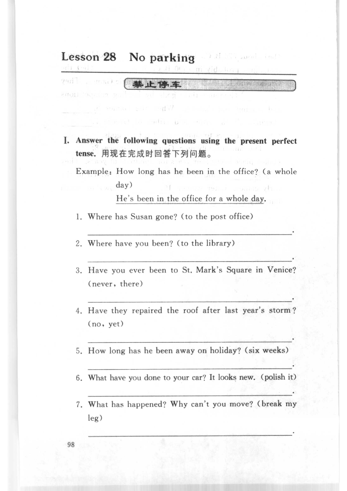
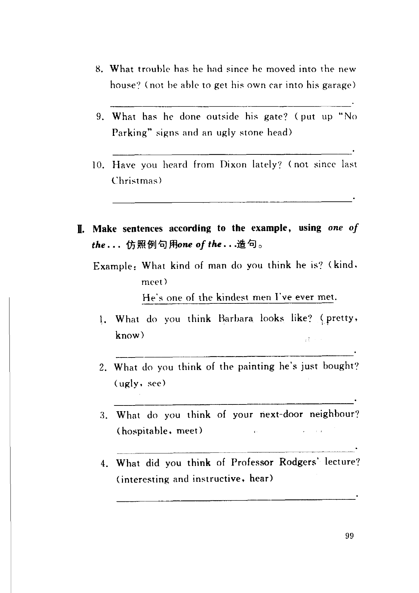
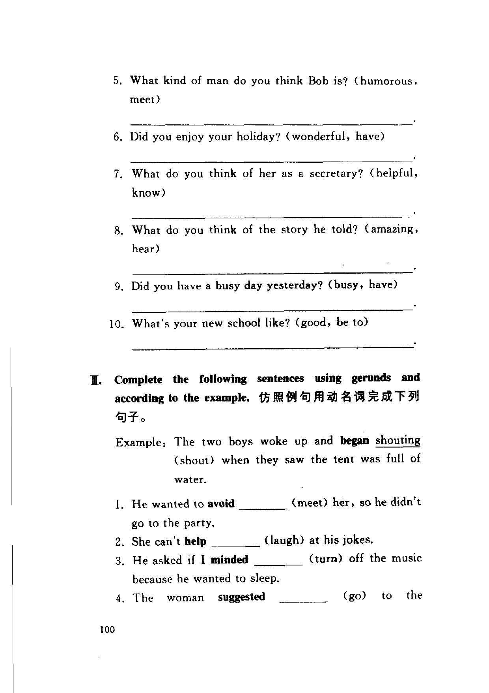
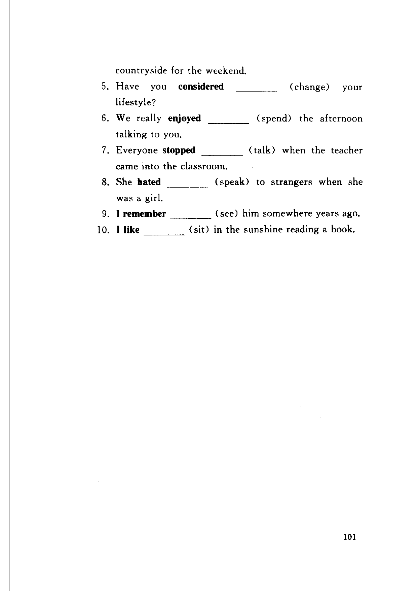

Grammar exercises · 语法练习
I. Answer the following questions using the present perfect tense.
用现在完成时回答下列问题。
Example: How long has he been in the office? (a whole day)
He's been in the office for a whole day.
-
I. Present perfect — Where has Susan gone? (to the post office)
-
I. Present perfect — Where have you been? (to the library)
-
I. Present perfect — Have you ever been to St. Mark's Square in Venice? (never, there)
-
I. Present perfect — Have they repaired the roof after last year's storm? (no, yet)
-
I. Present perfect — How long has he been away on holiday? (six weeks)
-
I. Present perfect — What have you done to your car? It looks new. (polish it)
-
I. Present perfect — What has happened? Why can't you move? (break my leg)
-
I. Present perfect — What trouble has he had since he moved into the new house? (not be able to get his own car into his garage)
-
I. Present perfect — What has he done outside his gate? (put up “No Parking” signs and an ugly stone head)
-
I. Present perfect — Have you heard from Dixon lately? (not since last Christmas)
II. Make sentences according to the example, using one of the...
仿照例句用 one of the... 造句。
Example: What kind of man do you think he is? (kind, meet)
He's one of the kindest men I've ever met.
-
II. one of the — What do you think Barbara looks like? (pretty, know)
-
II. one of the — What do you think of the painting he's just bought? (ugly, see)
-
II. one of the — What do you think of your next-door neighbour? (hospitable, meet)
-
II. one of the — What did you think of Professor Rodgers' lecture? (interesting and instructive, hear)
-
II. one of the — What kind of man do you think Bob is? (humorous, meet)
-
II. one of the — Did you enjoy your holiday? (wonderful, have)
-
II. one of the — What do you think of her as a secretary? (helpful, know)
-
II. one of the — What do you think of the story he told? (amazing, hear)
-
II. one of the — Did you have a busy day yesterday? (busy, have)
-
II. one of the — What's your new school like? (good, be to)
III. Complete the following sentences using gerunds and according to the example.
仿照例句用动名词完成下列句子。
Example: The two boys woke up and began shouting (shout) when they saw the tent was full of water.
-
III. Gerunds — He wanted to avoid (meet) her, so he didn't go to the party.
-
III. Gerunds — She can't help (laugh) at his jokes.
-
III. Gerunds — He asked if I minded (turn) off the music because he wanted to sleep.
-
III. Gerunds — The woman suggested (go) to the countryside for the weekend.
-
III. Gerunds — Have you considered (change) your lifestyle?
-
III. Gerunds — We really enjoyed (spend) the afternoon talking to you.
-
III. Gerunds — Everyone stopped (talk) when the teacher came into the classroom.
-
III. Gerunds — She hated (speak) to strangers when she was a girl.
-
III. Gerunds — I remember (see) him somewhere years ago.
-
III. Gerunds — I like (sit) in the sunshine reading a book.
Original images · 原图对照
Expand a page to compare it with the transcription. Open the original in a new tab to zoom in.
展开原图核对文字，也可以在新标签页打开原图放大查看。
Book page 98 · Exercise I (present perfect, items 1–7)
Open original · 打开原图 ↗ Download original · 下载原图


Book page 99 · Exercise I (present perfect, items 8–10) and Exercise II (one of the, items 1–4)
Open original · 打开原图 ↗ Download original · 下载原图


Book page 100 · Exercise II (one of the, items 5–10) and Exercise III (gerunds, items 1–4)
Open original · 打开原图 ↗ Download original · 下载原图


Book page 101 · Exercise III (gerunds, items 5–10)
Open original · 打开原图 ↗ Download original · 下载原图


Your notes and answers
Use this space for longer responses or exercises that do not have an individual answer box.